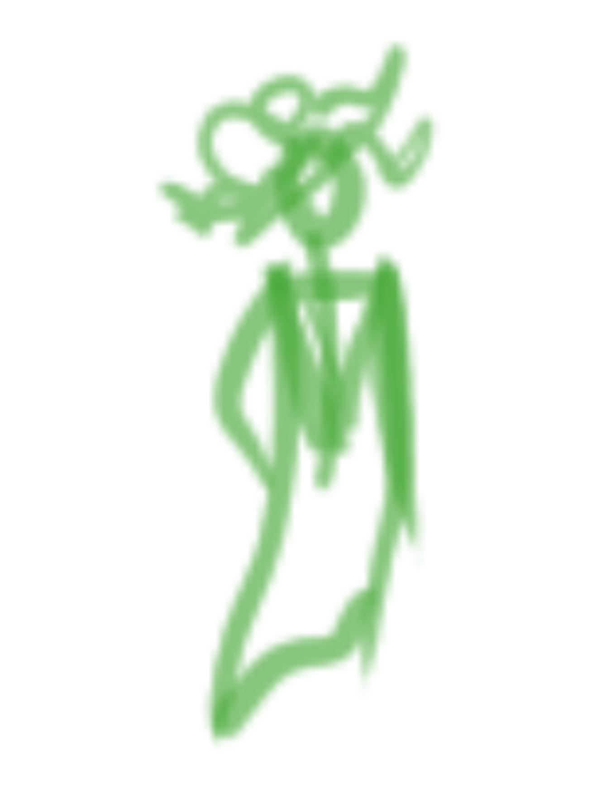
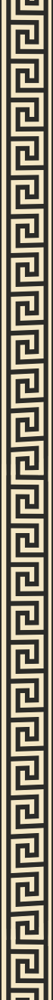

Medusa the gorgon is the daughter of the sea gods Phorcys and Ceto, along with her sisters Euryale and Stheno. According to which myth you follow, her origin as a gorgon varies. She was born as a human and served as a maiden at Athena’s temple, when she was cornered and raped by Poseidon. Athena transformed Medusa into a gorgon, though her reason for doing so varies by myth. In one version, the transformation is a blessing, giving Medusa the means to protect herself from ever being hurt again. In another, Medusa’s new form is a curse, Athena’s punishment to her for disgracing her temple. Eventually Medusa is murdered by the demigod Perseus, son of Zeus and Danae, in her sleep. Perseus had been ordered by King Polydectes to commit the murder for a trial and was given assistance by the gods, cutting off her head. Medusa’s death results in the birth of Chrysaor and the winged horse Pegasus. Often these figures are referred to as children of Poseidon, however the reason for this differs. Either they were born from drops of Medusa's blood that fell into the sea or, more commonly recognized, from Medusa's neck when she was beheaded. Perseus gained favor of the gods and was granted different boons to carry out his mission: a cap of invisibility (which may have belonged to Hades), winged sandals and a sword from Hermes, and a mirrored shield from Athena, to avoid looking at Medusa directly. After he beheaded her, Perseus kept Medusa’s head as he required it to complete the trial.
 